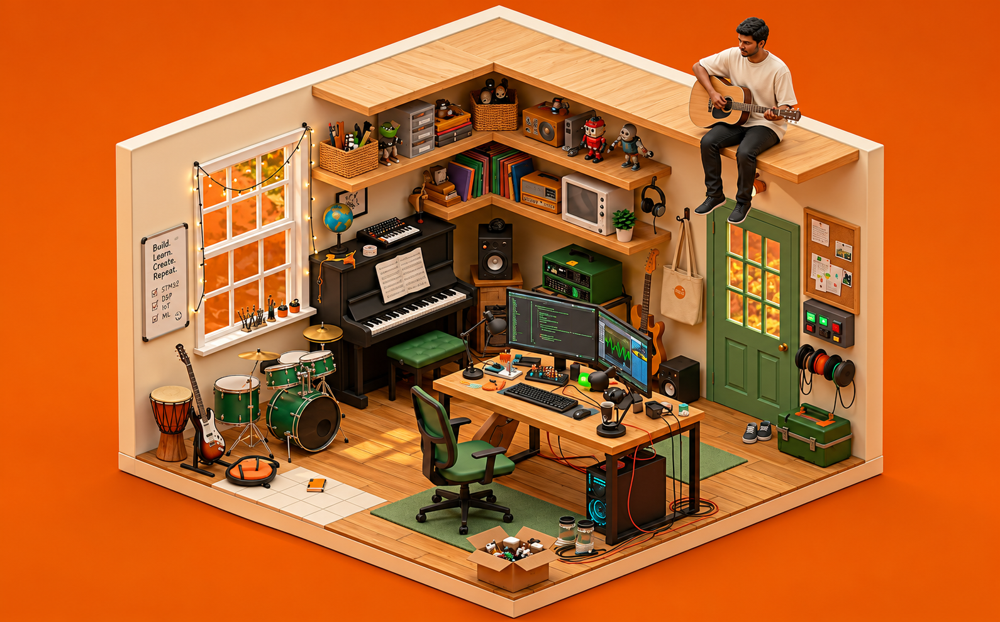

INTERNSHIP · DRAFTDATES TO CONFIRM
IoT Firmware Intern
KritiLabs Technologies
Internship entry reserved for your confirmed dates and responsibilities. Project work is listed separately in the projects section.

I’m Sai Balaji, a Computer Science and Engineering graduate-in-progress specialising in IoT, building toward embedded systems and electronics engineering.
I’m drawn to the point where code meets a physical system: firmware, microcontrollers, peripherals, communication protocols, and the small details that make hardware and software work together. I learn by building, testing, and finding out why something behaves the way it does.
CURRENTLY EXPLORING: LOW-LEVEL FIRMWARE / DEVICE INTERFACES / SIGNALS
“If you’re not scared, you’re not taking a chance, and if you’re not taking a chance, then what the hell are you doing?”
Three projects from the workbench. Each entry sticks to what’s documented; more build notes can be added as they’re ready.
PROJECT STATUS IS MARKED “TO CONFIRM” WHERE THE RÉSUMÉ DOESN’T SPECIFY IT.
KritiLabs Technologies
Internship entry reserved for your confirmed dates and responsibilities. Project work is listed separately in the projects section.
These are the systems and tools I’m spending time with. I’m still sorting practical experience from active learning, so this is an honest map of my interests—not a proficiency scorecard.
STM32 · ESP32 · Arduino · ARM Cortex-M
C · C++ · Python · Embedded C
UART · SPI · I²C · CAN · Sensors
STM32CubeIDE · STM32CubeMX · Altium · MATLAB · Simulink · LabVIEW · MPLAB
USB/HID · Device drivers · FPGA · Digital design · Signal processing
A place for experiments, implementation notes, technical explanations, and things I learn while making.
NO NOTES PUBLISHED YET.
The next entry will appear here when it’s ready to share.
ENGINEERING · FIRMWARE · ELECTRONICS
Curious about the systems beneath the surface. Always open to thoughtful conversations, collaborations, and interesting problems.